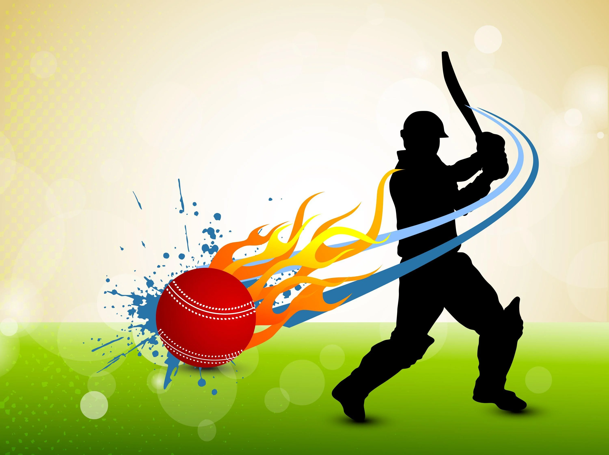

"Cricket Teaches Leadership, Tenacity, Discipline, Teamwork, and Coordination. Like any other sport, crickets involve multiple broad ranges of skills that help individuals develop more self-esteem, make strong mentally, and improve their resilience"

The first World Cup was organised in England in June 1975, with the first ODI cricket match having been played only four years earlier.